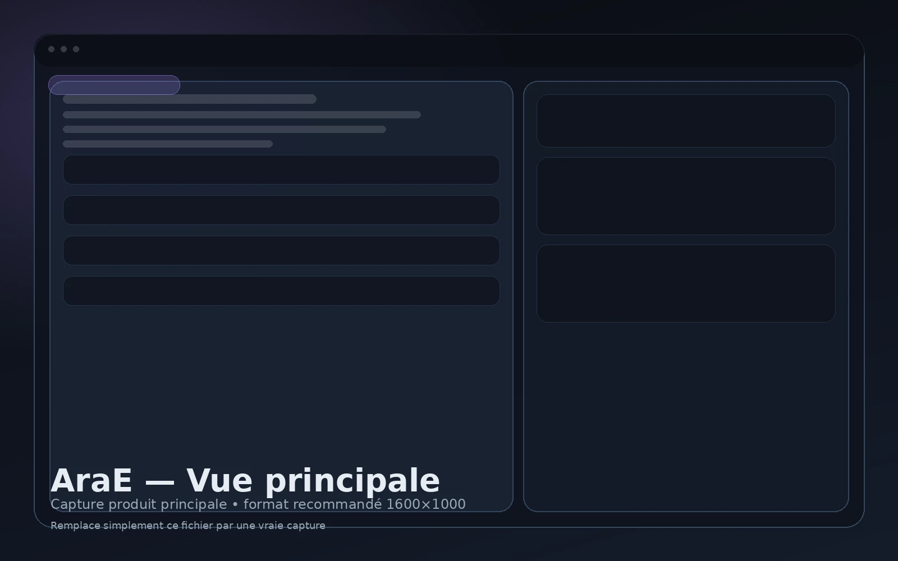
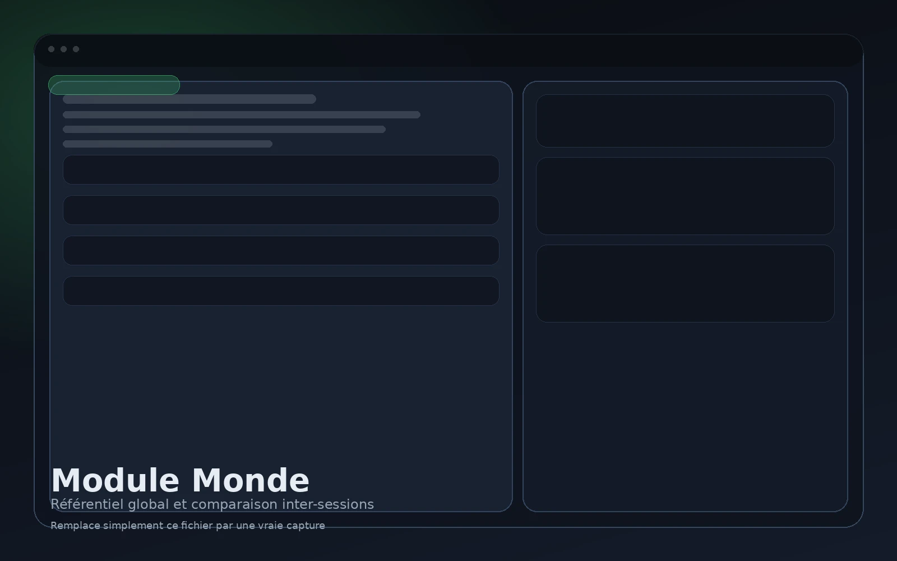
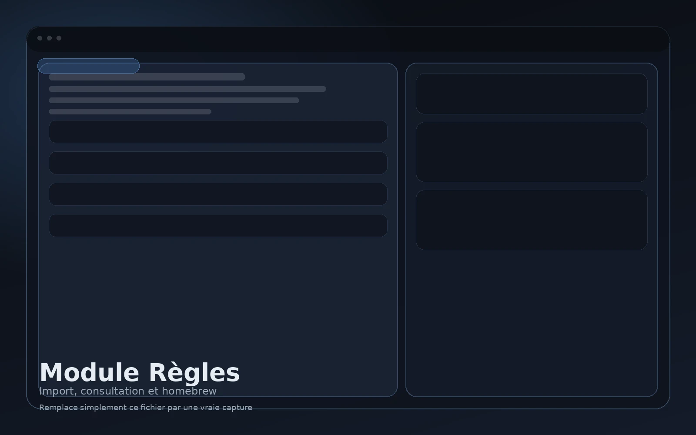
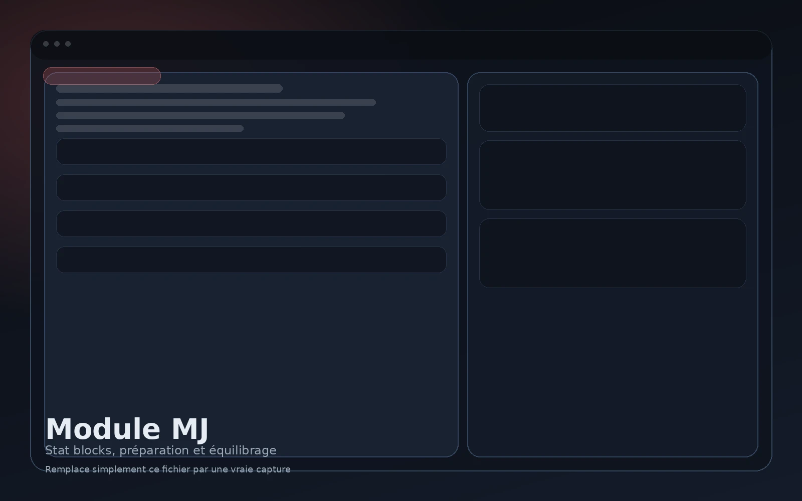

Créer une session
Chaque session devient un point d’ancrage chronologique dans l’histoire du groupe.
AraE n’est pas une simple accumulation de pages. Le produit suit une logique précise : capturer pendant la partie, structurer après, comparer dans le temps, puis retrouver immédiatement ce qui compte vraiment.
C’est cette cohérence qui différencie AraE d’un outil de notes généraliste détourné.

Le produit est organisé autour d’un enchaînement logique. C’est cette structure qui réduit la friction à la table.
Chaque session devient un point d’ancrage chronologique dans l’histoire du groupe.
Les notes se prennent sans casser le rythme de la partie ni imposer une structuration immédiate.
Les informations sont ensuite redistribuées en entités liées, versionnées ou consolidées selon leur nature.
Le logiciel permet de retrouver l’état d’un fait, d’un lieu ou d’un PNJ selon le contexte et la période.
Chaque capacité produit répond à un problème concret rencontré dans les campagnes longues.
Capture centralisée des informations prises sur le vif pendant la partie.
PNJ, lieux, factions, religions, monstres, chroniques, notes et éléments cartographiques.
Une information peut évoluer dans le temps sans effacer ce que le groupe croyait savoir auparavant.
Vue consolidée des entités globales pour sortir d’une lecture purement séquentielle.
Accès rapide à un système de jeu, ses variantes ou son adaptation maison.
Stat blocks, équilibrage et préparation de contenu dans un bloc dédié.
La valeur ne vient pas seulement des éléments présents, mais de la manière dont ils restent reliés dans le temps.
Ce qui était connu, supposé ou révélé à une session donnée ne se mélange pas avec un état final réécrit après coup.
Un PNJ, un lieu ou une faction cessent d’être des fragments perdus dans des pages libres : ils deviennent des objets réutilisables.
Sessions, monde, règles et outils MJ peuvent rester dans le même environnement au lieu d’être dispersés entre plusieurs logiciels.
Chaque module couvre une partie du travail, sans casser la cohérence globale du produit.

Journal, notes et éléments liés à l’avancement concret de la campagne.

Référentiel consolidé, vision plus macro et comparaison inter-sessions.

Système de jeu, variantes et homebrew consultables rapidement.

Stat blocks, équilibrage et préparation dédiée côté meneur.
Les éléments importants cessent d’être noyés dans des notes successives ou des documents dispersés.
Le groupe peut distinguer ce qu’il savait réellement à une session précise de ce qui a été corrigé ensuite.
La préparation, la consultation et la récupération d’information deviennent plus rapides et plus cohérentes.